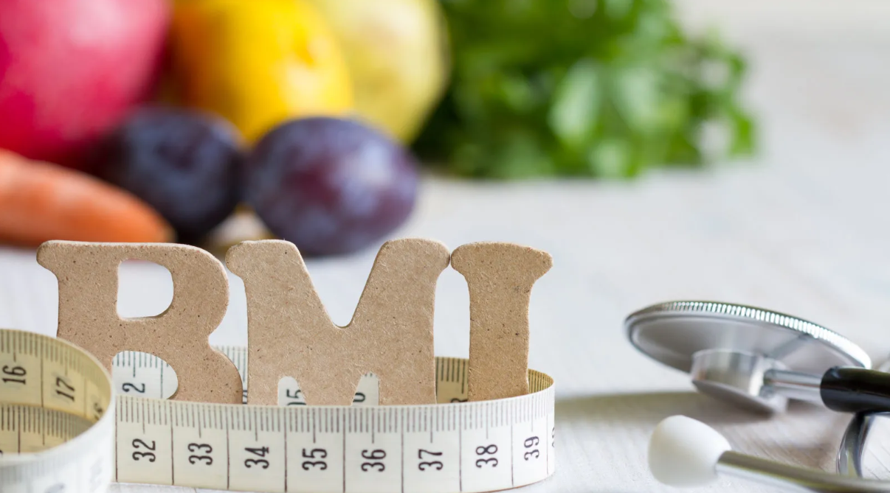

BMI stands for body mass index. It is used to determine whether or not someone has an unhealthy weight.

Having a healthy body mass index is one of the most important things you can do to live a happy, healthier life.
If your BMI is higher than average, you should be conscious about any changes you make to improve your health.
For example, people with a normal weight may want to consider changing their diet or exercise regime if they notice their BMI rising.
On the other hand, individuals who are very overweight might want to think about weight loss strategies before it becomes more difficult
to control their eating habits and activity levels.
Fortunately, there are ways to determine your body mass index so that you know what to do!
This article will go into detail on how to calculate your BMI.
The next step in determining if you have a healthy weight is calculating your body mass index (BMI).
A body mass index greater than 25 is considered overweight, while less than 24 is considered normal.
A body mass index higher than 30 indicates obesity.
People with this degree of obesity are at risk for serious health conditions like heart disease and diabetes.
To calculate your BMI, use these numbers as guidelines:
It’s important to note that people with very thin or very fat bodies can be suffering from eating disorders or obesity.
So it’s not just about how much money they cost you in clothes!
The best way to understand your own body size is to compare yourself to others your age and sex.
For example, if you weigh more than someone his/her same height, then you probably outweigh them,
so you would put into effect a healthier BMI.
Another good rule of thumb is to see what shape your body is currently in and whether those changes are positive or negative.
If you feel happier with your body, then you’re using it properly, but wishing you had thinner legs or flatter stomachs means
you might want to make some tweaks to stay within optimal limits.
The next step in calculating your body mass index is finding your place in one of the eight major categories .
These include: underweight, healthy weight, overweight, obese class I-II, obesity III-IV, or a pre-obese state.
The first two are considered normal or healthy weights.
People who fall into this group have always been defined as having an appropriate amount of weight for their height.
If you find that you’re within these two categories, give yourself a pat on the back! You’ve got a great health status.
However, if you identify as being in the other six groups, it’s important to note that not all heights are equal.
A person with a tall stature may need to watch how much they eat to maintain their health.
Also, people who are very active can burn more calories than someone who isn’t as active.
If you want to know where you fit into the BMI scale, talk to your doctor or dietician about what is meaningful to you and your lifestyle.
Having an adequate amount of nutrients in your body is important for overall health and weight loss.
To determine if you have enough, we need to look at how much nutrition you are ingesting as well as how much you’re consuming.
We can calculate your BMI by using both of these factors.
By having an appropriate number of calories, you will find that your height needs adjustment because of bone density.
This way, you get a more accurate calculation of your total body mass!
Here’s what the calculations look like:
Having a higher BMI does not necessarily mean that you are more likely to gain weight or suffer from obesity.
It can even be considered neutral, as too much muscle tissue helps keep our body lean and tall.
By having enough muscle mass , your blood circulation is improved which aids in keeping your heart healthy.
Also, studies show that eating less may be easier when you’re overweight due to your body using its own hormones to regulate hunger.
However, it is important to note that most people who have a normal-weight range of BMIs also include some amount of fat within their bodies.
Just like someone who is very muscular could still have some level of adipose tissue (fat), people with a normal BMI may also have small amounts
of excess body fat.
Having an underweight body type is very possible if you do not have enough muscle in your body.
People with this body shape are called “athletes” because they feel that their lack of fat makes them spend more time exercising,
which contributes to weight loss.
Use our free BMI calculator to find out what’s your BMI today.